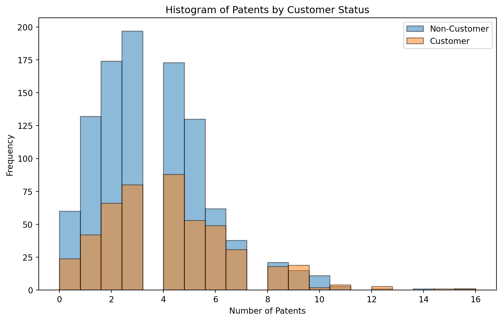
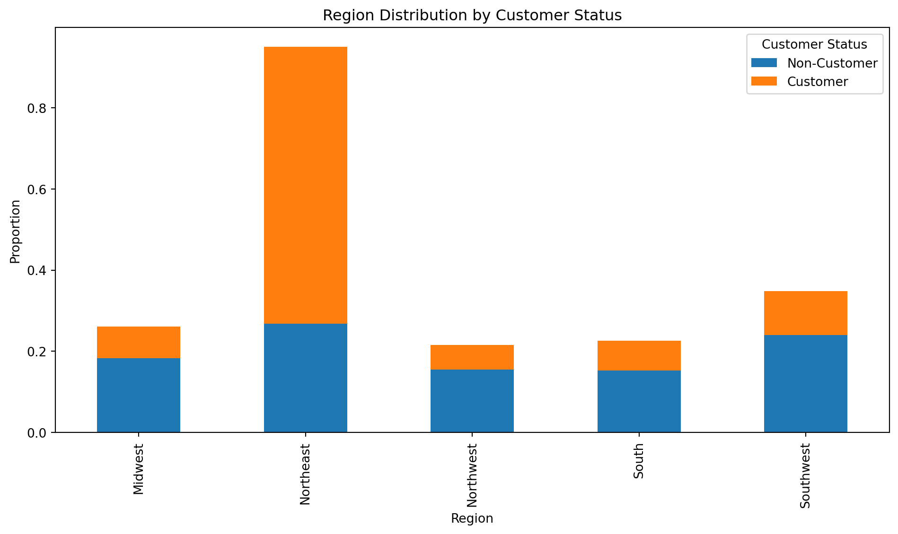
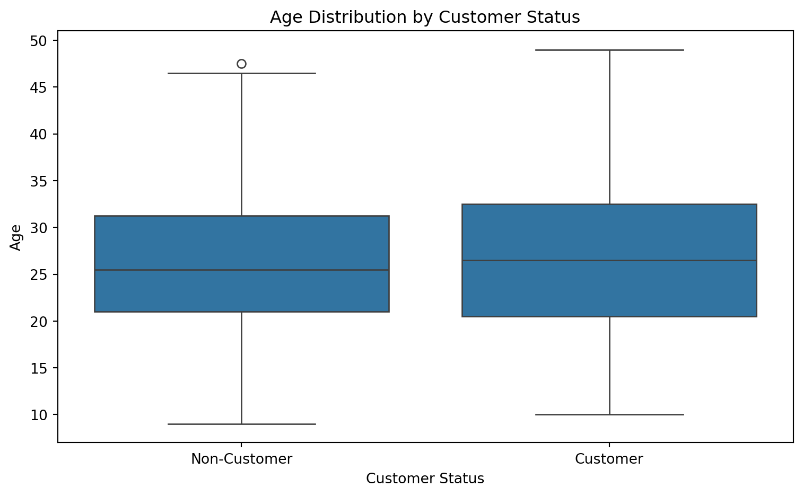
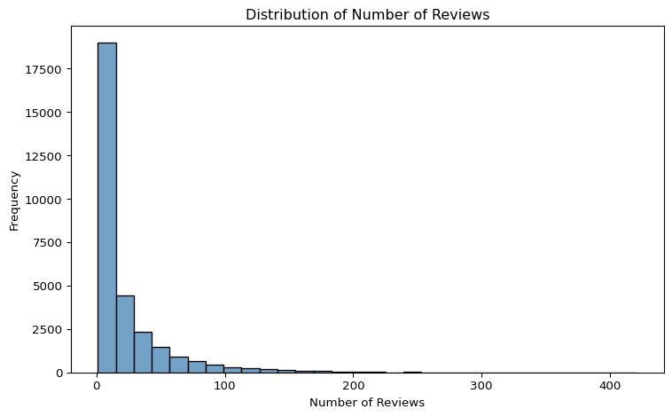
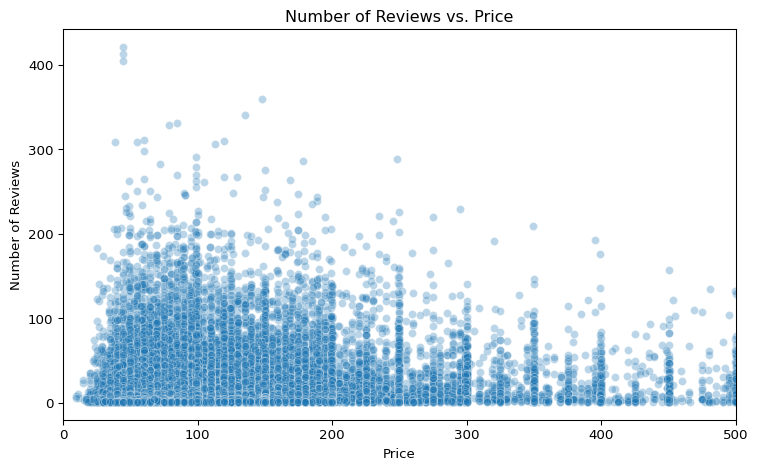
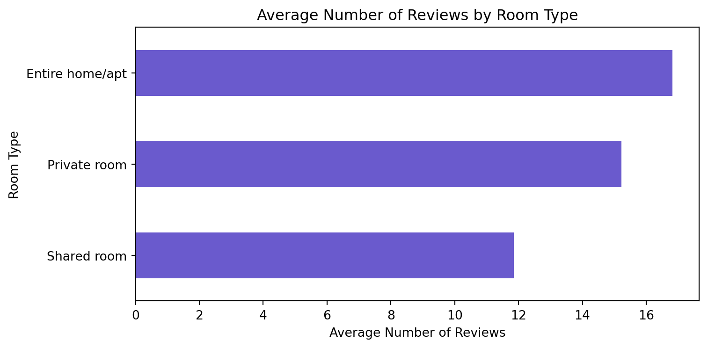

Blueprinty is a small firm that makes software for developing blueprints specifically for submitting patent applications to the US patent office. Their marketing team would like to make the claim that patent applicants using Blueprinty’s software are more successful in getting their patent applications approved. Ideal data to study such an effect might include the success rate of patent applications before using Blueprinty’s software and after using it. Unfortunately, such data is not available.
However, Blueprinty has collected data on 1,500 mature (non-startup) engineering firms. The data include each firm’s number of patents awarded over the last 5 years, regional location, age since incorporation, and whether or not the firm uses Blueprinty’s software. The marketing team would like to use this data to make the claim that firms using Blueprinty’s software are more successful in getting their patent applications approved.
Data
show code
import pandas as pdimport numpy as npimport statsmodels.api as smimport matplotlib.pyplot as pltfrom scipy import statsdf = pd.read_csv("blueprinty.csv")df.head()
patents
region
age
iscustomer
0
0
Midwest
32.5
0
1
3
Southwest
37.5
0
2
4
Northwest
27.0
1
3
3
Northeast
24.5
0
4
3
Southwest
37.0
0
First, I will analyze the breakdown of patents according to customer status.
show code
plt.figure(figsize=(10, 6))for status in [0, 1]: label ='Customer'if status ==1else'Non-Customer' subset = df[df['iscustomer'] == status] plt.hist(subset['patents'], bins=20, alpha=0.5, label=label, edgecolor='black')plt.xlabel('Number of Patents')plt.ylabel('Frequency')plt.title('Histogram of Patents by Customer Status')plt.legend()plt.show()means = df.groupby('iscustomer')['patents'].mean()means.index = ['Non-Customer', 'Customer'] # rename index for clarityprint("Mean number of patents by customer status:")print(means)

Mean number of patents by customer status:
Non-Customer 3.473013
Customer 4.133056
Name: patents, dtype: float64
The histogram shows that both customers and non-customers have a right-skewed distribution of patent counts, with most companies holding between 2 and 4 patents. Non-customers are more frequent overall, especially at lower patent counts, though the gap narrows slightly as patent counts increase. Both groups include companies with high patent counts (10+), but these are rare. Overall, the distributions overlap substantially, suggesting customer status alone may not strongly predict the number of patents.
Next, I will compare region and age by customer status.
show code
import seaborn as sns region_counts = df.groupby('iscustomer')['region'].value_counts(normalize=True).unstack().fillna(0)print("Proportion of regions by customer status:")print(region_counts)region_counts.T.plot(kind='bar', stacked=True, figsize=(10, 6))plt.title('Region Distribution by Customer Status')plt.ylabel('Proportion')plt.xlabel('Region')plt.legend(title='Customer Status', labels=['Non-Customer', 'Customer'])plt.tight_layout()plt.show()print("\nSummary statistics for age by customer status:")print(df.groupby('iscustomer')['age'].describe())plt.figure(figsize=(8, 5))sns.boxplot(x='iscustomer', y='age', data=df)plt.xticks([0, 1], ['Non-Customer', 'Customer'])plt.title('Age Distribution by Customer Status')plt.xlabel('Customer Status')plt.ylabel('Age')plt.tight_layout()plt.show()
Proportion of regions by customer status:
region Midwest Northeast Northwest South Southwest
iscustomer
0 0.183513 0.267910 0.155054 0.153091 0.240432
1 0.076923 0.681913 0.060291 0.072765 0.108108

Summary statistics for age by customer status:
count mean std min 25% 50% 75% max
iscustomer
0 1019.0 26.101570 6.945426 9.0 21.0 25.5 31.25 47.5
1 481.0 26.900208 7.814678 10.0 20.5 26.5 32.50 49.0

The Northeast region stands out as having a much higher proportion of customers compared to other regions. In contrast, regions like the Midwest, Northwest, South, and Southwest have lower proportions of customers. This suggests that customers are disproportionately concentrated in the Northeast.
The age distributions for customers and non-customers are similar, with a slightly higher median age among customers. Both groups span a wide range of ages, but the interquartile range and spread are slightly greater for customers, indicating more age variability.
Estimation of Simple Poisson Model
Since our outcome variable of interest can only be small integer values per a set unit of time, we can use a Poisson density to model the number of patents awarded to each engineering firm over the last 5 years. We start by estimating a simple Poisson model via Maximum Likelihood.
We assume that \(Y_1, Y_2, \dots, Y_n\) are i.i.d. from a Poisson distribution:
The maximum likelihood estimate of \(\lambda\) is simply the sample mean, \(\bar{Y}\), which aligns with intuition since the Poisson distribution has mean \(\lambda\).
Next, we extend our simple Poisson model to a Poisson Regression Model such that \(Y_i = \text{Poisson}(\lambda_i)\) where \(\lambda_i = \exp(X_i'\beta)\). The interpretation is that the success rate of patent awards is not constant across all firms (\(\lambda\)) but rather is a function of firm characteristics \(X_i\). Specifically, we will use the covariates age, age squared, region, and whether the firm is a customer of Blueprinty.
show code
import numpy as npfrom scipy.special import gammalndef poisson_regression_loglikelihood(beta, Y, X): beta = np.asarray(beta, dtype=float) eta = X @ beta eta = np.clip(eta, -20, 20) lambda_ = np.exp(eta) return-np.sum(Y * eta - lambda_ - gammaln(Y +1))
The results suggest that several firm characteristics are associated with differences in the expected number of patents awarded:
Age has a positive and significant effect: for each additional year, the expected number of patents increases by approximately 16% (Exp(Coeff) = 1.1602), holding other variables constant.
Age squared has a small negative coefficient (Exp(Coeff) = 0.997), implying diminishing returns to age — the patent rate increases with age but at a decreasing rate.
Being a customer of Blueprinty is associated with a 23% higher patent rate (Exp(Coeff) = 1.2307) compared to non-customers, suggesting potential benefits from using the software.
Region effects are smaller:
Firms in the South and Southwest have slightly higher expected patent counts than the base region (dropped during one-hot encoding).
The Northeast and Northwest show very small or negligible differences.
Together, the model suggests that age, customer status, and region may all influence patent outcomes, and that Blueprinty’s customers tend to have higher success rates — even after controlling for other variables.
show code
X_base = X.drop(columns='intercept', errors='ignore').copy()X_base = sm.add_constant(X_base)X_base = X_base.astype(float)X_0 = X_base.copy()X_0['iscustomer'] =0X_1 = X_base.copy()X_1['iscustomer'] =1y_pred_0 = results.predict(X_0)y_pred_1 = results.predict(X_1)difference = y_pred_1 - y_pred_0avg_diff = np.mean(difference)print(f"\nAverage treatment effect of being a Blueprinty customer: {avg_diff:.4f} additional patents over 5 years.")
Average treatment effect of being a Blueprinty customer: 0.7928 additional patents over 5 years.
Using Blueprinty’s software is associated with a meaningful increase in patent productivity. On average, customers produced approximately 0.79 more patents over five years than comparable non-customers. This suggests that Blueprinty contributes to greater innovation outcomes, likely by improving workflows, R&D efficiency, or idea capture.
AirBnB Case Study
Introduction
AirBnB is a popular platform for booking short-term rentals. In March 2017, students Annika Awad, Evan Lebo, and Anna Linden scraped of 40,000 Airbnb listings from New York City. The data include the following variables:
Variable Definitions
- `id` = unique ID number for each unit
- `last_scraped` = date when information scraped
- `host_since` = date when host first listed the unit on Airbnb
- `days` = `last_scraped` - `host_since` = number of days the unit has been listed
- `room_type` = Entire home/apt., Private room, or Shared room
- `bathrooms` = number of bathrooms
- `bedrooms` = number of bedrooms
- `price` = price per night (dollars)
- `number_of_reviews` = number of reviews for the unit on Airbnb
- `review_scores_cleanliness` = a cleanliness score from reviews (1-10)
- `review_scores_location` = a "quality of location" score from reviews (1-10)
- `review_scores_value` = a "quality of value" score from reviews (1-10)
- `instant_bookable` = "t" if instantly bookable, "f" if not
show code
import pandas as pddf_airbnb = pd.read_csv('airbnb.csv')df_airbnb.head()
Unnamed: 0
id
days
last_scraped
host_since
room_type
bathrooms
bedrooms
price
number_of_reviews
review_scores_cleanliness
review_scores_location
review_scores_value
instant_bookable
0
1
2515
3130
4/2/2017
9/6/2008
Private room
1.0
1.0
59
150
9.0
9.0
9.0
f
1
2
2595
3127
4/2/2017
9/9/2008
Entire home/apt
1.0
0.0
230
20
9.0
10.0
9.0
f
2
3
3647
3050
4/2/2017
11/25/2008
Private room
1.0
1.0
150
0
NaN
NaN
NaN
f
3
4
3831
3038
4/2/2017
12/7/2008
Entire home/apt
1.0
1.0
89
116
9.0
9.0
9.0
f
4
5
4611
3012
4/2/2017
1/2/2009
Private room
NaN
1.0
39
93
9.0
8.0
9.0
t
Exploratory Data Analysis
First, I will start by cleaning and preparing the data.
Next, I will conduct futher exploratory analysis of key variable relationships and distributions.
Number of Reviews
show code
import matplotlib.pyplot as pltimport seaborn as snsplt.figure(figsize=(8, 5))sns.histplot(df_clean["number_of_reviews"], bins=30, kde=False, color="steelblue")plt.title("Distribution of Number of Reviews")plt.xlabel("Number of Reviews")plt.ylabel("Frequency")plt.tight_layout()plt.show()

Reviews vs. Price
show code
plt.figure(figsize=(8, 5))sns.scatterplot(x="price", y="number_of_reviews", data=df_clean, alpha=0.3)plt.title("Number of Reviews vs. Price")plt.xlabel("Price")plt.ylabel("Number of Reviews")plt.xlim(0, 500) plt.tight_layout()plt.show()

Average Number of Reviews by Room Type
show code
avg_reviews = df_airbnb.groupby("room_type")["number_of_reviews"].mean().sort_values()avg_reviews.plot(kind="barh", color="slateblue", figsize=(8, 4))plt.title("Average Number of Reviews by Room Type")plt.xlabel("Average Number of Reviews")plt.ylabel("Room Type")plt.tight_layout()plt.show()

Poisson Regression Model
show code
import statsmodels.api as smimport statsmodels.formula.api as smf# Define the formula for the modelformula = ("number_of_reviews ~ log_price + review_scores_value + ""instant_bookable + room_type_Private_room + room_type_Shared_room")# Fit a Generalized Linear Model (GLM) with a Poisson distributionpoisson_model = smf.glm( formula=formula, data=df_clean, family=sm.families.Poisson()).fit()# Show the model summaryprint(poisson_model.summary())
Intercept (2.89): Represents the expected log number of reviews for a baseline listing: an entire home, not instantly bookable, with log(price) = 0 and average review value score.
room_type_Private_room (0.057): Listings that are private rooms receive approximately 5.9% more reviews than entire homes, all else equal.
room_type_Shared_room (−0.141): Listings that are shared rooms receive about 13.2% fewer reviews than entire homes.
log_price (0.0995): A 1-unit increase in the log of price (roughly a ~2.7× increase in price) is associated with a 10.5% increase in expected number of reviews.
review_scores_value (−0.0436): Higher review scores (value) are slightly associated with fewer reviews — about 4.3% fewer per point. This may reflect selection effects or behavioral differences (e.g., less feedback from highly satisfied guests).
instant_bookable (0.344): Instantly bookable listings get about 41% more reviews, indicating strong user preference for instant booking options.
Overall Conclusion
The Poisson regression model shows that price, booking convenience, and room type meaningfully influence the number of reviews (used here as a proxy for bookings). Specifically:
Instant bookable listings and those with higher prices tend to receive substantially more reviews.
Private rooms slightly outperform entire homes, while shared rooms underperform.
Surprisingly, higher value scores slightly correlate with fewer reviews, possibly due to review fatigue or selection bias.
These insights suggest that convenience (instant booking) and strategic pricing are critical levers for improving listing performance.